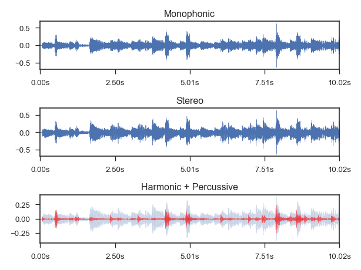

librosa.display.waveplot¶
-
librosa.display.waveplot(y, sr=22050, max_points=50000.0, x_axis='time', offset=0.0, max_sr=1000, time_fmt=None, **kwargs)[source]¶ Plot the amplitude envelope of a waveform.
If y is monophonic, a filled curve is drawn between [-abs(y), abs(y)].
If y is stereo, the curve is drawn between [-abs(y[1]), abs(y[0])], so that the left and right channels are drawn above and below the axis, respectively.
Long signals (duration >= max_points) are down-sampled to at most max_sr before plotting.
Parameters: - y : np.ndarray [shape=(n,) or (2,n)]
audio time series (mono or stereo)
- sr : number > 0 [scalar]
sampling rate of y
- max_points : postive number or None
Maximum number of time-points to plot: if max_points exceeds the duration of y, then y is downsampled.
If None, no downsampling is performed.
- x_axis : str {‘time’, ‘off’, ‘none’} or None
If ‘time’, the x-axis is given time tick-marks.
See also:
time_ticks- offset : float
Horizontal offset (in time) to start the waveform plot
- max_sr : number > 0 [scalar]
Maximum sampling rate for the visualization
- time_fmt : None or str
Formatting for time axis. None (automatic) by default.
See
time_ticks.- kwargs
Additional keyword arguments to
matplotlib.pyplot.fill_between
Returns: - pc : matplotlib.collections.PolyCollection
The PolyCollection created by fill_between.
Examples
Plot a monophonic waveform
>>> import matplotlib.pyplot as plt >>> y, sr = librosa.load(librosa.util.example_audio_file(), duration=10) >>> plt.figure() >>> plt.subplot(3, 1, 1) >>> librosa.display.waveplot(y, sr=sr) >>> plt.title('Monophonic')
Or a stereo waveform
>>> y, sr = librosa.load(librosa.util.example_audio_file(), ... mono=False, duration=10) >>> plt.subplot(3, 1, 2) >>> librosa.display.waveplot(y, sr=sr) >>> plt.title('Stereo')
Or harmonic and percussive components with transparency
>>> y, sr = librosa.load(librosa.util.example_audio_file(), duration=10) >>> y_harm, y_perc = librosa.effects.hpss(y) >>> plt.subplot(3, 1, 3) >>> librosa.display.waveplot(y_harm, sr=sr, alpha=0.25) >>> librosa.display.waveplot(y_perc, sr=sr, color='r', alpha=0.5) >>> plt.title('Harmonic + Percussive') >>> plt.tight_layout()
